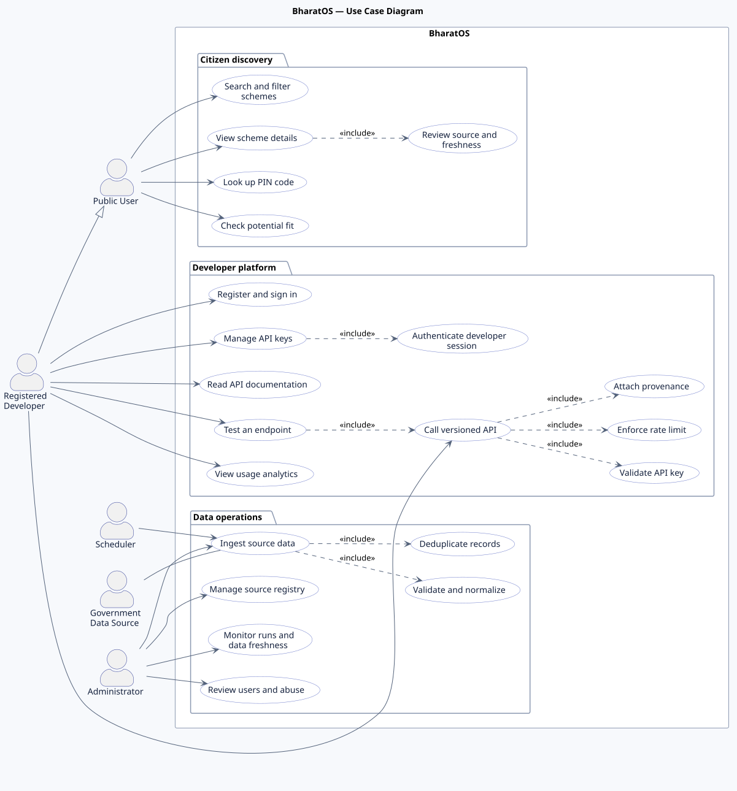
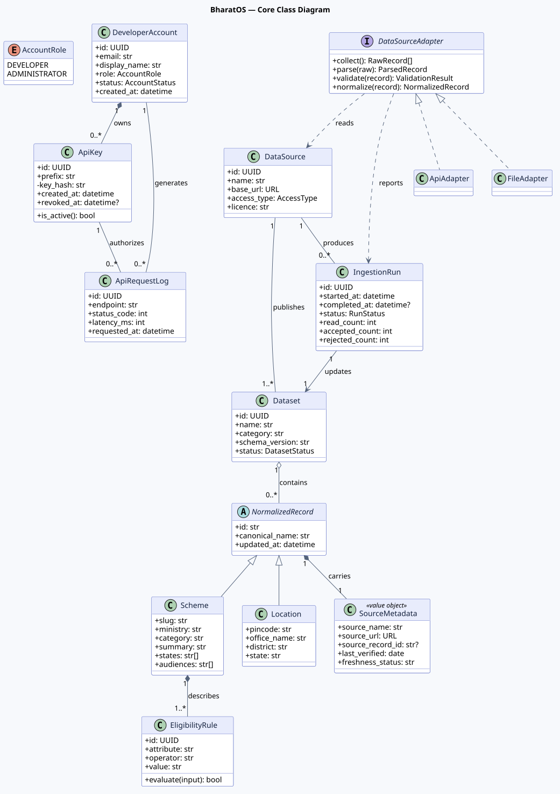
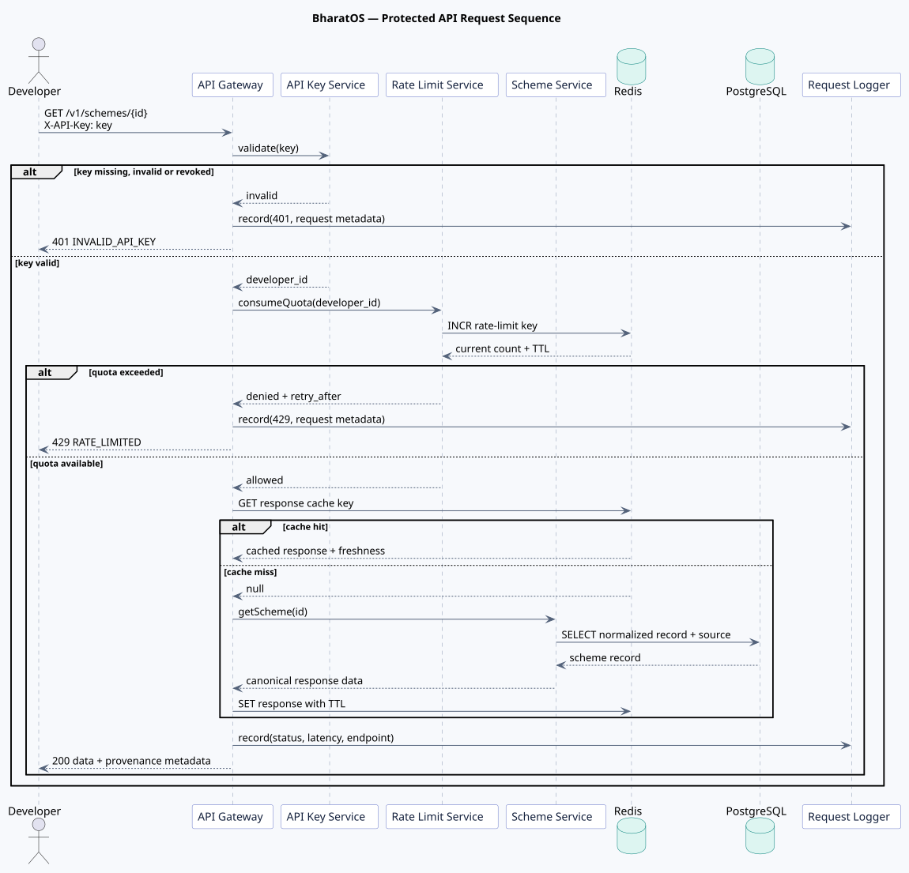
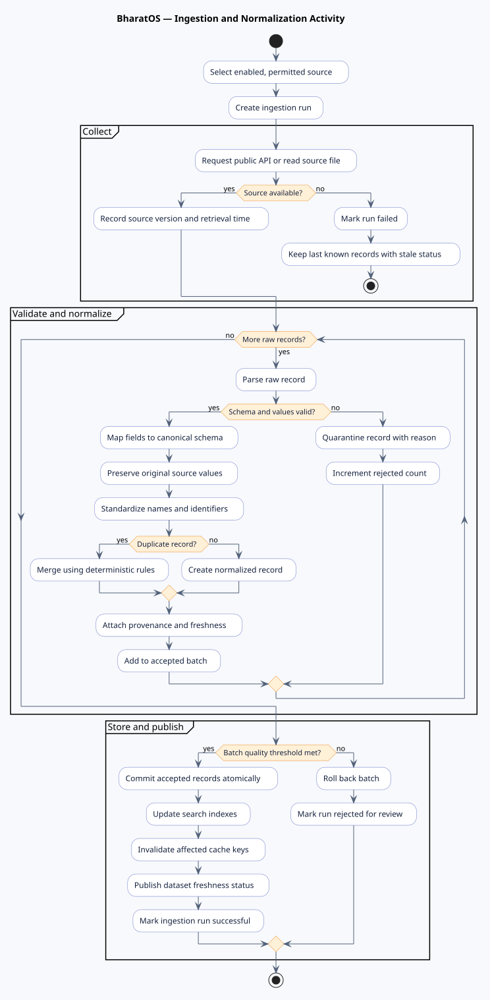
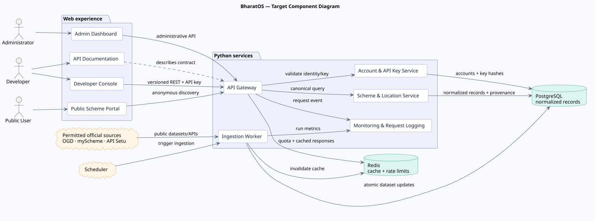

1. Use Case Diagram
Shows who interacts with BharatOS and the externally meaningful services available to citizens, developers, administrators, data sources and the scheduler.

Software Engineering Lab
Five complementary views of the complete target system. Phase one implements the portal and prototype API; infrastructure shown in these diagrams is delivered in later phases.
Student project — not an official Government of India service.
Shows who interacts with BharatOS and the externally meaningful services available to citizens, developers, administrators, data sources and the scheduler.

Shows the core domain model, ownership, multiplicities, inheritance and the adapter contract used to add data sources without rewriting the API.

Follows a protected developer request through key validation, rate limiting, caching, storage and request logging, including failure branches.

Shows how raw public data is collected, validated, normalized, deduplicated, enriched, stored and published, including quarantine and rollback paths.

Separates user interfaces, Python services, operational services, storage and permitted external sources in the target architecture.
